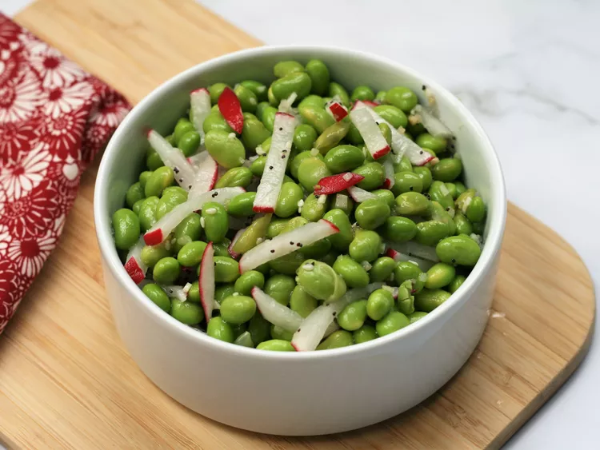

Edamame and Radish Salad

Description
This simple edamame and radish salad makes a refreshing summer side to complement most anything, but especially grilled fish or chicken. It's best if made a day ahead.
Ingredients
- 2 (8-ounce packages) shelled frozen edamame
- 6 large radishes, cut into matchsticks
- 2 cloves garlic, minced
- 3 tablespoons rice vinegar
- 2 tablespoons olive oil
- 1 tablespoon Everything But the Bagel seasoning
- 1 teaspoon sugar
- salt to taste
Steps
- Place frozen edamame in a bowl. Pour in enough boiling water to cover; let sit for 10 minutes. Drain. Add radishes and garlic.
- Add vinegar, oil, everything seasoning, and sugar; toss to coat. If needed, add a sprinkle of salt. Refrigerate at least 1 hour, and preferably overnight. Flavor gets better the longer it sits.